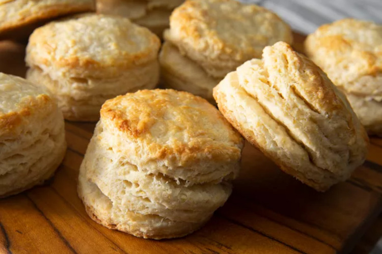

Biscuits

Ingredients
- Flour
- Baking powder
- Baking soda
- Salt
- Unsalted butter
- Buttermilk
Steps
- Preheat oven to 425F
- Whisk dry ingredients together in large bowl
- Add buttermilk and stir gently
- Put dough onto a floured surface and pat into a rectangle
- Fold dough three times, then roll on a floured surface to about 1/2 thickness
- Use a 2 1/2 inch round cutter to cut biscuits
- Bake until golden brown, about 15 minutes